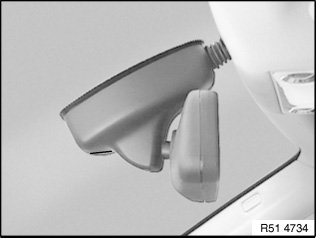
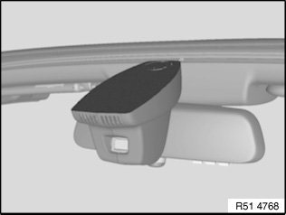

51 16 060 Removing and Installing/Replacing Interior Rearview Mirror (Overview)
51 16 060 Removing And Installing/Replacing Interior Rearview Mirror (Overview)

NOTE: Version with cable (X) for:
- Automatic dim action (electro-chrome technology) for interior rearview mirror
- Condensation sensor
- Remote control (infrared or radio)
- High-beam assistant
- Garage door openers
- Compass
- Rain sensor
Version without cable (X) with full foot (1).
Version with cable (X) and plug trim cover (1).
Version with mirror arm end caps (1).

Version with rain sensor.

Version with Autobeam.
Version with toll mirror for Japan.